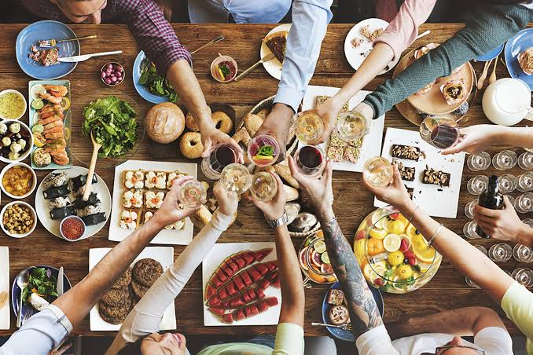

Welcome to Food Website

Food is an important part of our everyday lives and is much more than something we eat to satisfy our hunger. It gives us the energy and nutrients we need throughout the day. Food is also closely connected to our culture, traditions, celebrations, and memories. Every family and community has dishes that are special and meaningful to them.
In this website, we will explore different types of food from around the world and learn about the dishes people enjoy. We will look at popular recipes, interesting ingredients, cooking methods, and famous dishes from different countries. You will also find information about some of the flavors and ingredients that make each dish unique.
Exploring food from different countries is a fun way to learn about cultures and traditions around the world. From Indian biryani and Mexican tacos to Italian pizza and Japanese sushi, every dish has its own history and identity. Food allows us to experience new flavors and understand how people from different cultures enjoy their meals.